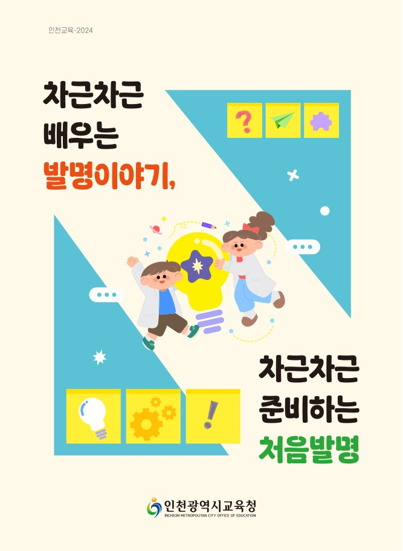
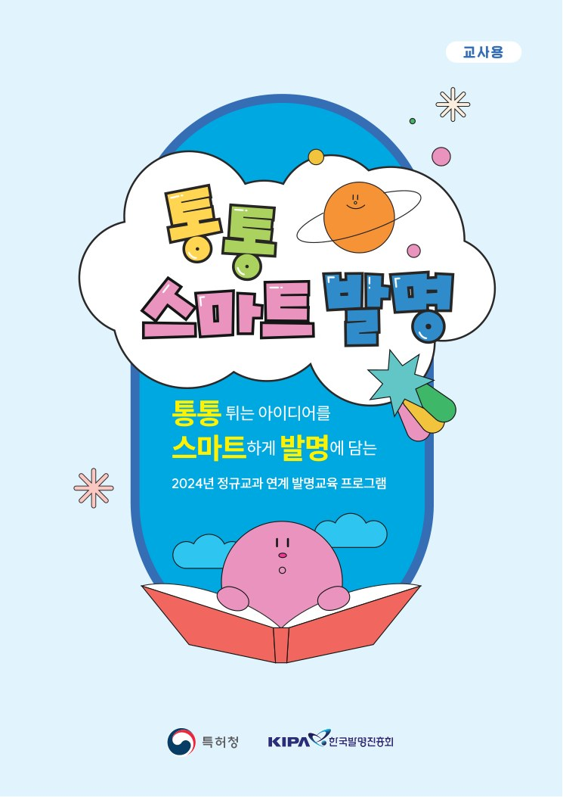

<!-- s45 자료 받기: 위 4(수업 zip)·아래 3(자료집) 카드. <style>은 덱 머리 CSS에, <section>은 s45 자리에 붙인다. 링크는 배포 주소 절대경로. 자료집 표지는 덱 img/의 06-cover-*.jpg -->
<style>
/* 자료 받기 위 4·아래 3 카드 (위: 수업 zip, 아래: 자료집 링크) */
.dl-grid { display: grid; grid-template-columns: repeat(12, minmax(0, 1fr)); grid-template-rows: repeat(2, minmax(0, 1fr)); gap: 32px; width: 100%; height: 100%; }
.dl-grid > .dl-zip { grid-column: span 3; padding: 28px 30px; }
.dl-grid > .dl-link { grid-column: span 4; }
.dl-zip .dl-title { font-size: 46px; }
.dl-zip .dl-title small { font-size: 32px; }
.dl-zip .dl-sub { font-size: 26px; }
.dl-grid > .dl-card { gap: 6px; }
.dl-grid > .dl-link { padding-top: 28px; padding-bottom: 28px; }
.dl-link .dl-title { font-size: 48px; }
.dl-card { position: relative; display: flex; flex-direction: column; gap: 10px; min-width: 0; min-height: 0; padding: 32px 40px; border-radius: var(--r-tile); background: var(--tile); color: var(--ink); text-decoration: none; box-shadow: var(--shadow), 0 0 0 1px var(--hairline); overflow: hidden; word-break: keep-all; transition: transform .15s; }
.dl-card:hover { transform: translateY(-4px); }
.dl-card:hover .dl-title { text-decoration: underline; text-underline-offset: 6px; }
.dl-top { display: flex; align-items: center; justify-content: space-between; gap: 16px; }
.dl-kind { display: inline-block; padding: 6px 20px; border-radius: var(--r-chip); font: 700 24px/1.2 var(--font); letter-spacing: .04em; background: var(--chip); color: var(--chip-ink); }
.dl-zip .dl-kind { background: var(--accent); color: var(--accent-ink); }
.dl-size { font: 700 26px/1 var(--font); color: var(--muted); font-variant-numeric: tabular-nums; }
.dl-title { margin-top: 8px; font-family: var(--font-d); font-weight: var(--w-d); letter-spacing: var(--ls-d); font-size: 54px; line-height: 1.15; }
.dl-title small { display: block; margin-top: 4px; font-size: 38px; color: var(--muted); }
.dl-sub { font: 400 28px/1.35 var(--font); color: var(--muted); }
.dl-sub .nw { white-space: nowrap; }
.dl-go { margin-top: auto; font: 700 28px/1.2 var(--font); color: var(--accent-text); }
.dl-link { padding-right: 210px; }
.dl-cover { position: absolute; right: 36px; top: 50%; transform: translateY(-50%); width: 150px; height: 212px; object-fit: cover; border-radius: 10px; box-shadow: 0 0 0 1px var(--hairline), 0 8px 20px rgba(0,0,0,.12); }
</style>

  <section class="slide sc" data-id="s45" data-title="자료 받기">
    <div class="sc-head"><span class="sc-chip">마무리</span><h2 class="sc-title">자료 받기</h2></div>
    <div class="sc-body">
      <div class="dl-grid">
        <a class="dl-card dl-zip" href="https://skyang9838-hue.github.io/invention-lab/files/cup.zip" download><span class="dl-top"><span class="dl-kind">ZIP</span><span class="dl-size">18MB</span></span><span class="dl-title">나만의 컵<small>캔바 AI</small></span><span class="dl-sub">PPT · 활동지 2종 · 광고 예시</span><span class="dl-go">내려받기 ↓</span></a>
        <a class="dl-card dl-zip" href="https://skyang9838-hue.github.io/invention-lab/files/teachable.zip" download><span class="dl-top"><span class="dl-kind">ZIP</span><span class="dl-size">62MB</span></span><span class="dl-title">AI를 더한 발명<small>티처블머신</small></span><span class="dl-sub">PPT · 활동지 · 강아지·고양이 사진</span><span class="dl-go">내려받기 ↓</span></a>
        <a class="dl-card dl-zip" href="https://skyang9838-hue.github.io/invention-lab/files/nature.zip" download><span class="dl-top"><span class="dl-kind">ZIP</span><span class="dl-size">42MB</span></span><span class="dl-title">자연은 나의 선생님<small>오토드로우</small></span><span class="dl-sub">PPT · 활동지 · 활동지 예시</span><span class="dl-go">내려받기 ↓</span></a>
        <a class="dl-card dl-zip" href="https://skyang9838-hue.github.io/invention-lab/files/emoticon.zip" download><span class="dl-top"><span class="dl-kind">ZIP</span><span class="dl-size">7MB</span></span><span class="dl-title">친환경 실천 이모티콘<small>도덕 · 쓱쏙 발명</small></span><span class="dl-sub">지도서 발췌 PDF · 지도안 · 평가</span><span class="dl-go">내려받기 ↓</span></a>
        <a class="dl-card dl-link" href="https://www.ice.go.kr/arc/ad/func/ppm/selectPpmInfo.do?pblictnSn=3001179&amp;mi=10644" target="_blank" rel="noopener"><span class="dl-top"><span class="dl-kind">링크</span></span><span class="dl-title">차근차근 배우는 발명이야기</span><span class="dl-sub">인천시교육청 <span class="nw">· 2024</span></span><span class="dl-go">공식 페이지 ↗</span></a>
        <a class="dl-card dl-link" href="https://www.ip-edu.net/home/kor/board.do?menuPos=82&amp;act=detail&amp;idx=56964" target="_blank" rel="noopener"><span class="dl-top"><span class="dl-kind">링크</span></span><span class="dl-title">쓱쏙 발명</span><span class="dl-sub">특허청·한국발명진흥회 <span class="nw">· 2025</span></span><span class="dl-go">공식 페이지 ↗</span></a>
        <a class="dl-card dl-link" href="https://www.ip-edu.net/home/kor/board.do?menuPos=82&amp;act=detail&amp;idx=56960" target="_blank" rel="noopener"><span class="dl-top"><span class="dl-kind">링크</span></span><span class="dl-title">통통 스마트 발명</span><span class="dl-sub">특허청 <span class="nw">· 2024</span></span><span class="dl-go">공식 페이지 ↗</span></a>
      </div>
    </div>
    <div class="talk" hidden><ul><li>위 줄은 오늘 소개한 수업 네 개의 자료를 수업별로 묶은 zip입니다. 누르면 바로 받아집니다. 앞의 세 개에는 수업 PPT와 학생용 활동지, 예시가 들어 있습니다.</li><li>친환경 실천 이모티콘은 「쓱쏙 발명」 교사용 지도서에서 그 차시 쪽만 뽑은 PDF입니다. 수업 지도안, 활동별 자료, 평가 기준이 들어 있습니다.</li><li>아래 줄은 수업의 바탕이 된 자료집입니다. 누르면 공식 페이지가 새 탭으로 열리고, 거기서 받으시면 됩니다.</li><li>PPT는 40분 수업용으로 줄여 둔 것이라 그대로 쓰셔도 됩니다.</li></ul></div>
  </section>
